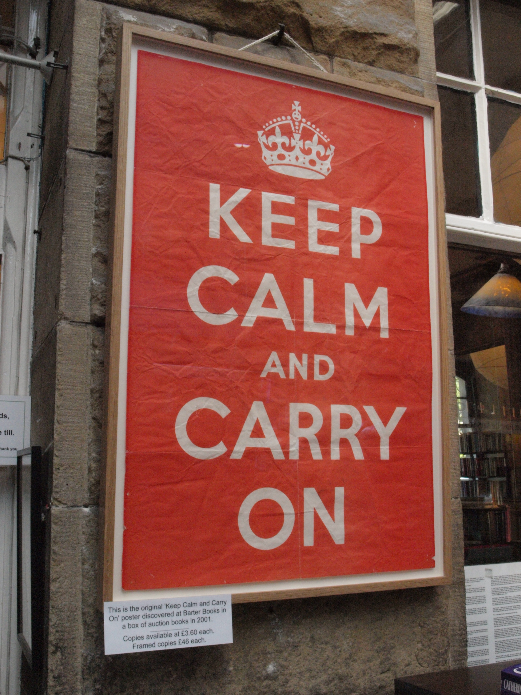

2
X was a series of motivational posters produced by the British government in 1939 in preparation for the Second World War. Although never actually used for its intended purpose, X was supposed to have been lost until a copy was rediscovered in the storehouse of a library in 2000. As the popularity of the poster in various media has grown, innumerable parodies, imitations and co-optations have also appeared, making it extremely recognisable globally.
Identify X.
